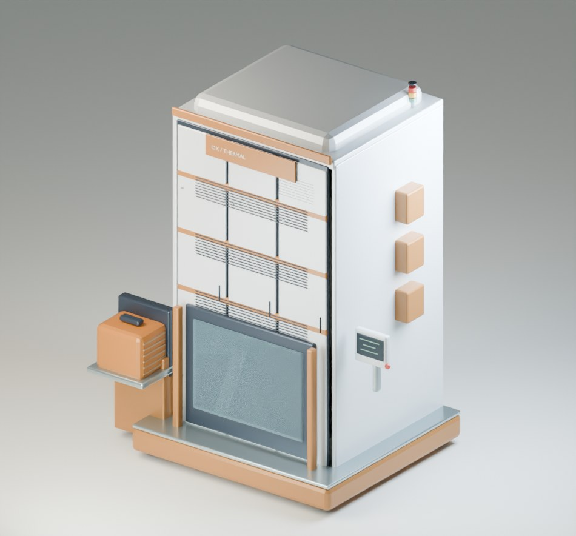
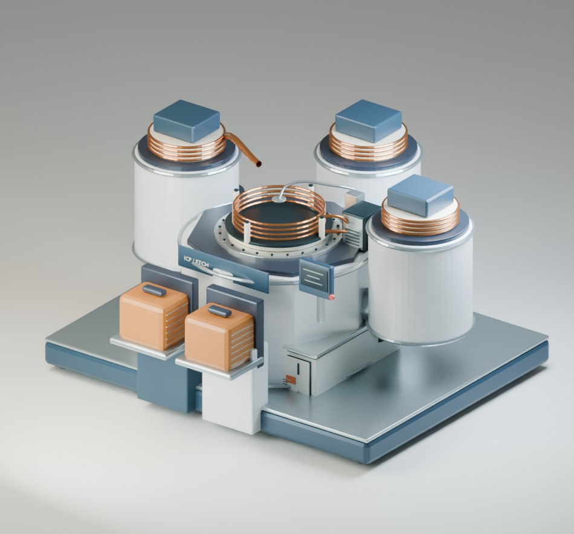

SEMICONDUCTOR PROCESS STUDIO
공정을 보고.
조건을 좁히고.
근거로 설명하다.
장비의 동작에서 조건의 차이까지.
관찰하고, 비교하고, 다시 확인할 수 있는
반도체 공정 실험 공간.
온도와 시간을 함께 바꾸며 모델의 산화막 변화를 비교합니다.

지금 확인하려는
과제에서 시작하세요.
하나의 웨이퍼 위에 연결한
공정의 전체 맥락.
- 공정 단계
- 117
- 장비 모형
- 18
- 공정 모듈
- 8
Planar CMOS · 2 Metal
공개 원리를 축약한 교육용 구조 모델
01 / EXPERIMENT WORKFLOW
질문을 조건으로.
조건을 검토 자료로.
직접 실행할 수 있는 세 가지 진입점.
각 단계의 입력과 결과를 분리해 확인합니다.
-
PROCESS WINDOW
한 번의 값보다,
조건의 범위를 읽습니다.두 변수를 선택하고 9개 또는 25개 조합을 같은 입력에서 계산합니다. 관심 지표와 목표 범위를 정해 결과가 어떻게 달라지는지 살펴보세요.
산화 공정 조건 맵 시작DEMO QUESTION“온도와 시간을 바꾸면
산화막은 어떻게 달라질까?”온도 × 시간→산화막 변화각 조합은 계산 모델의 결과입니다.
현장 공정의 허용 범위나 수율을 인증하지 않습니다. -
EQUIPMENT & STRUCTURE
장비의 움직임과
웨이퍼 구조를 함께 봅니다.전체 장비에서 반입과 반출을 따라가고, 내부 구조로 공정 기구를 관찰합니다. 완료 시점이 같은 두 실험을 가져와 구조의 차이를 설명하세요.
장비 관찰 · 실험 비교 시작
ICP ETCH / 장비 외관과 내부 구조를 구분해 관찰 -
DATA REVIEW
로그를 읽기 전에,
입력의 의미부터 확인합니다.JSON·CSV 운전 기록을 불러와 공정 태그와 단위를 연결합니다. 처리 구간과 입력 이력을 확인하고 같은 입력에서 계산한 기준 결과와 비교합니다.
운전 데이터 검토 시작INPUT → REVIEW- 01운전 기록장비 · 웨이퍼 · 시각
- 02태그와 단위모델 변수와 명시적 연결
- 03원본과 계산입력 출처와 모델값 분리
02 / REVIEW HANDOFF
좋은 실험은,
다시 확인할 수 있어야.
선택한 조건과 계산 결과를 함께 남기세요.
공정 조건 맵에서 세 가지 형식으로
검토 자료를 내보낼 수 있습니다.
- JSON
- 다시 계산할 수 있는 조건
입력 이력, 선택 변수와 조합, 모델 버전을 함께 보관합니다.
- CSV
- 조합별로 비교하는 수치
조건과 계산 지표를 표로 옮겨 후속 검토에 사용합니다.
- HTML
- 맥락을 담은 독립 보고서
범위와 방법, 결과를 브라우저에서 열어 읽고 전달합니다.
03 / FIELD CONNECTION
현장과 연결할 때
필요한 것들.
파일 검토에서 시작해 적용 범위를 정합니다.
장비 통신과 현장 정확도는 별도 검증 대상입니다.
- 01 대상 식별
- 장비·챔버·제품·웨이퍼와 레시피 개정 번호
- 02 입력 정의
- 센서 태그, 물리 단위, 공정 시각과 품질 정보
- 03 비교 근거
- 연결 가능한 계측값, 오차 기준과 독립 검증 LOT
- 04 연결 사양
- 현장 시스템의 접근 방식과 장비별 통신 어댑터